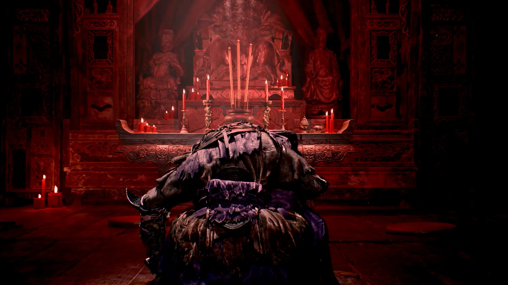

There is no publicly downloadable Phantom Blade Zero demo. Steam, the PlayStation Store, and the Epic Games Store currently list the full game, with no downloadable demo available as of November 9, 2026. However, playable event demos did exist. S-GAME ran its 2024 World Tour Demo at international gaming events, reaching more than 12,000 participants, and held further hands-on sessions in 2025. These builds were available in person, not as public downloads. (S-GAME, 2024-06-07; VICE, 2025-02-24; S-GAME, 2025-08-29; checked 2026-11-09)
Release: Steam unlocked on October 28, 2026, at 7 PM US Pacific time. The PlayStation Store and Epic Games Store list October 29, 2026, reflecting regional release timing. (Steam; PlayStation Store; Epic Games Store, checked 2026-11-09)
Cost: $59.99 Standard, $69.99 Digital Deluxe on Steam, PlayStation Store, and Epic Games Store (US). (Steam; PlayStation Store; Epic Games Store, checked 2026-11-09)
Install size: 145 GB available storage on PC, with SSD installation required. (Steam, checked 2026-11-09)
Refund route: Steam's standard refund policy allows requests within 14 days of purchase and with less than two hours of playtime. Requests go through Steam Support. (Steam Refunds, checked 2026-11-09)

The 2024 tour build closed on named boss fights rather than a story chapter. Still: official media library (pbz.s-game.cn), retrieved 2026-11-09.
Is there a Phantom Blade Zero demo right now?
Three different types of access need to be separated: a downloadable public demo, an in-person event build, and a store listing that never became an accessible download.
Public downloadable demo: no. Steam, PlayStation Store, and Epic Games Store currently offer the full game and its paid editions. None provides a downloadable demo entry. (Steam; PlayStation Store; Epic Games Store, checked 2026-11-09)
Event demo: yes, historically. S-GAME announced its World Tour Demo on June 7, 2024. In a February 2025 interview, the developer's CEO said that six hands-on demo events had taken place worldwide, attracting more than 12,000 players. The official 2025 S-Party recap subsequently reported another 5,000-plus participants. (S-GAME, 2024-06-07; VICE, 2025-02-24; S-GAME, 2025-08-29)
Unconfirmed PlayStation Store listing: August 2026. On August 12, 2026, Push Square reported that a Phantom Blade Zero demo listing had briefly appeared on the PlayStation Store before being removed. The listing did not provide access to a playable build. The August 17 State of Play subsequently passed without an official demo announcement. Neither S-GAME nor PlayStation confirmed that the listing represented a planned public release. (Push Square, 2026-08-12; Push Square, 2026-08-18)
Limited-time digital window: not confirmed. There is no verified record of a publicly downloadable demo that was released for a limited period and subsequently expired. The removed PlayStation Store listing should not be treated as proof that a playable download existed. (Push Square, 2026-08-12; checked 2026-11-09)
Official news archive: The development history did not jump directly from the 2024 tour to the 2026 launch. S-GAME published a 2025 S-Party hands-on event report on August 29, 2025, and a creative director's update on June 2, 2026, covering the game's development and release delay. (S-GAME, 2025-08-29; S-GAME, 2026-06-02)

Event sessions were built around the parry loop, which is what visitors judged the build on. Still: official media library (pbz.s-game.cn), retrieved 2026-11-09.
How to get the demo on Steam and PlayStation
Neither storefront currently offers a downloadable trial. The following steps show where to check the official listings.
Steam
- Open the Phantom Blade Zero Steam page.
- Check the purchase area beneath the trailer for a separate demo download option.
- As of November 9, 2026, only the paid editions are available. The full game requires 145 GB of storage and an SSD.
PlayStation Store
- Open the PS5 product page, either on console or in a browser.
- Check the available editions and product information.
- The current listing offers the full Standard and Digital Deluxe editions, with no downloadable demo.
Epic Games Store
- Open the Phantom Blade Zero Epic Games Store page.
- Check the available editions and purchase options.
- The current listing offers the full game, with no separate demo download.
Official combat clip. The HUD carries a main-hand and an off-hand weapon slot; the 2024 demo briefings described a two-weapon loadout backed by Phantom Edges. Footage: pbz.s-game.cn, retrieved 2026-11-09.
What the demo contains
There was no single fixed retail demo. S-GAME presented different builds at different events, and their scope changed over time. The 2024 World Tour focused on combat, while the 2025 S-Party build added more exploration and story content.
2024 World Tour Demo
- Chapter range: No numbered campaign chapter was identified. The build was a short, curated combat showcase, with a brief tutorial and combat sequences rather than a complete story chapter. (Wccftech, 2024-06-15; GameSpot, 2024-08-21)
- Weapons: Gamescom 2024 footage showed at least five weapon types: dual blades, a one-handed sword, a great sword, a cannon, and a flamethrower. The official combat description also specified a loadout of two main weapons and two Phantom Edges. The five visible types are not a confirmed complete demo inventory. (GameSpot, 2024-08-21; S-GAME, 2024-06-07)
- Bosses: Three named encounters appeared in the Gamescom 2024 demo: Tie Sha the Frenzy, Commander Cleave, and Huangxing, The Sunken Pillar of Kunlun. (GameSpot, 2024-08-21)
- Length: Hands-on reports from Summer Game Fest 2024 described sessions of approximately 20–30 minutes. Wccftech reported a 30-minute appointment, while Gamepressure reported a 20-minute hands-on session. These were event-specific session lengths, not a fixed official completion-time requirement. (Wccftech, 2024-06-15; Gamepressure, 2024-06-17)

Two weapons held at once, the loadout structure the demo briefings described. Gamescom 2024 footage showed five weapon types in the event build. Still: official media library (pbz.s-game.cn), retrieved 2026-11-09.
Where the 2024 World Tour Demo appeared
S-GAME later stated that six hands-on demo events had been held worldwide, with more than 12,000 participants. Public event coverage identifies the following five named stops. The cited official statement does not enumerate all six events, so an additional location cannot be reliably identified from that statement alone. (VICE, 2025-02-24; S-GAME, 2024-06-07)
- Summer Game Fest, Los Angeles: June 8–10, 2024.
- Bilibili World, Shanghai: July 12–14, 2024.
- ChinaJoy, Shanghai: July 26–29, 2024.
- gamescom, Cologne: August 21–25, 2024.
- Tokyo Game Show, Tokyo: September 26–29, 2024.
(S-GAME official announcements; Gamepressure, 2024-06-17; 4Gamer, 2024-07-15; 3DM, 2024-07-12; GameSpot, 2024-08-21; checked 2026-11-09)
2025 S-Party Demo
The 2025 build was substantially more developed than the original 2024 combat showcase. S-GAME held three hands-on events from July 26 to August 26, 2025, at Beijing's Shougang Park, Shanghai's Fuxing Island, and Cologne, Germany. More than 5,000 players attended. (S-GAME, 2025-08-29)
- Level: Seven Star Sword Formation, with map exploration and story sequences.
- Weapons: The walkthrough showed combat using the game's weapon-switching system and Phantom Edges. A complete event-specific weapon count was not published.
- Bosses: Wan Jun "Coppermaul," Red Wraith, Chief Disciple of the Seven Stars, and Chief Disciple's Fallen Hope.
- Length: Approximately one hour for the full event demo. S-GAME published a 22-minute walkthrough showing selected gameplay, including a hidden two-boss encounter.
(S-GAME official S-Party report, 2025-08-29; official demo walkthrough, 2025-07-27; Gematsu, 2025-07-26)

Exploration and narrative sequences were the 2025 S-Party additions; that build ran roughly an hour end to end. Still: official media library (pbz.s-game.cn), retrieved 2026-11-09.
2026 press previews
Separate from the public event demos, selected journalists received extended hands-on access to near-final builds in October 2026. Some sessions lasted approximately six hours and covered Chapter 1, most of Chapter 2, and additional boss encounters. These were private press previews, not public demo releases. (Inven Global, 2026-10-08; RPGFan, 2026-10-25)
Can demo progress carry over?
No public demo save can currently be imported. The historical event builds did not provide a public save-transfer route, and no publicly downloadable demo has shipped with an official save-transfer policy. (S-GAME event reports; checked 2026-11-09)
PC-to-PS5 cross-save is also not confirmed by the official sources checked. Steam lists Steam Cloud support, and Epic lists Cloud Saves, but these platform-specific features do not establish cross-platform save synchronization. (Steam; Epic Games Store; PlayStation Store, checked 2026-11-09)
Demo vs full game
The difference is access and scope. Historical event demos were curated builds; the retail version contains the complete campaign.
| Item | Demo / event build | Full game |
|---|---|---|
| Price | No public downloadable edition or public demo price | $59.99 Standard; $69.99 Digital Deluxe (US) |
| Content | 2024 combat-focused World Tour; 2025 one-hour S-Party build with exploration and story | Full campaign, released October 2026 |
| Save data | No public demo save to import; no official cross-save policy confirmed | Platform-specific save systems; PC–PS5 cross-save unconfirmed |
| Platforms | In-person event hardware and private press builds; some 2024 footage was captured on PS5 | Windows PC via Steam and Epic Games Store; PS5 |
| Availability | Historical event access only; no public download as of 2026-11-09 | On sale since October 28/29, 2026, depending on regional unlock time |
Should you try it before buying?
There is no free public trial. Full-game reviews are now available, although reviewers have different opinions about the narrative and its pacing.
Early story pacing: UnGeek's October 26, 2026 review stated that "the initial pacing can make it difficult to get invested in the broader narrative." The reviewer specifically referred to the first couple of hours, which spend considerable time introducing characters and establishing the world. (UnGeek, 2026-10-26)
Story interruptions: Push Square's October 26, 2026 review warned that "the extended storytelling can kill the pace of the game." Its criticism focused on flashbacks, collectibles, and lengthy narrative sequences interrupting the action. (Push Square, 2026-10-26)
These are reviewers' assessments of narrative delivery. They do not establish that the combat or overall campaign experience is poor.
If you purchase through Steam, the standard refund policy provides a way to test the retail version yourself. The normal eligibility requirements are a request within 14 days of purchase and less than two hours of playtime. Requests must be submitted through Steam Support and remain subject to Valve's refund policy. (Steam Refunds, checked 2026-11-09)
Phantom Blade Zero demo FAQ
Is there a Phantom Blade Zero demo?
No publicly downloadable demo is available on Steam, PlayStation Store, or Epic Games Store as of November 9, 2026. Historical in-person demos were available at gaming events.
Did a demo ever release publicly?
Yes, in the sense that event attendees could play official demo builds. S-GAME's 2024 World Tour reached more than 12,000 participants across six hands-on events. However, no public downloadable demo was distributed. (S-GAME, 2024-06-07; VICE, 2025-02-24)
Can I play a Phantom Blade Zero demo on PS5?
There is no downloadable PS5 demo. However, PS5 hardware was used for some historical event builds, including Bilibili World 2024 and gamescom 2024. A PlayStation Store demo listing briefly appeared in August 2026, but it was removed without an official playable release. (4Gamer, 2024-07-15; Game*Spark, 2024-08-22; Push Square, 2026-08-12)
Do I need the demo to judge the game?
No free trial is currently available. Full-game reviews provide information about combat, bosses, story, and performance. Steam buyers can also use the standard 14-day and under-two-hour refund policy, subject to Steam's rules. (Steam Refunds, checked 2026-11-09)